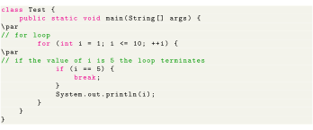
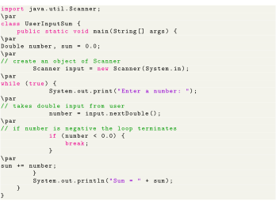
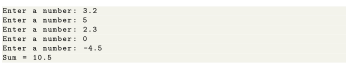

Next: Labeled break Statement Up: Control Flow and Decision Previous: Infinite while Loop Contents
The break statement in Java terminates the loop immediately, and the control of the program moves to the next statement following the loop. It is almost always used with decision-making statements (Java if...else Statement). Here is the syntax of the break statement in Java:

Output:

In the above program, we are using the for loop to print the value of i in each iteration. To know how for loop works, visit the Java for loop. Here, notice the statement,

This means when the value of i is equal to 5, the loop terminates. Hence we get the output with values less than 5 only. The program below calculates the sum of numbers entered by the user until user enters a negative number. To take input from the user, we have used the Scanner object. To learn more about Scanner, visit Java Scanner.

Output:

In the above program, the test expression of the while loop is always true. Here, notice the line,

This means when the user input negative numbers, the while loop is terminated.